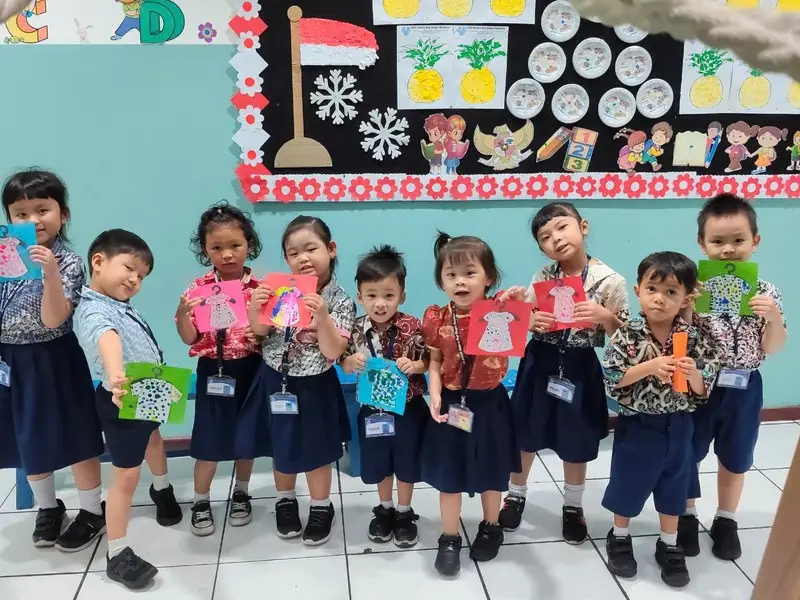
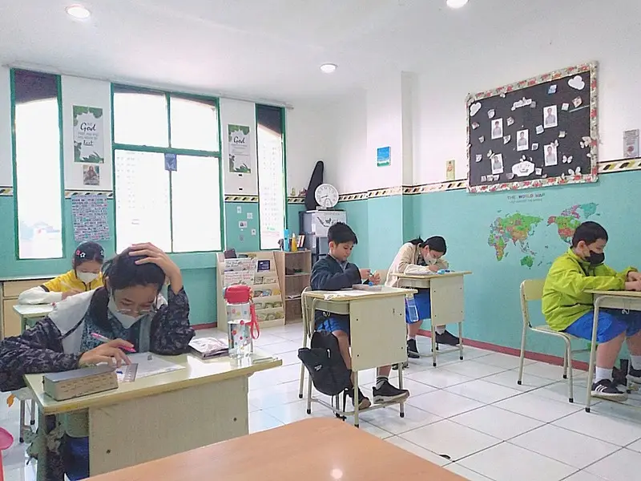

Karakter Kristus menjadi pusat sejak usia dini, dikenalkan lewat pembelajaran interaktif dengan berbagai media: cerita Alkitab, lagu, permainan, dan karya tangan.

Matematika, IPAS, dan Bahasa diajarkan sebagai jendela untuk mengenal TUHAN Sang Pencipta, sambil membangun dasar akademik yang kuat.
Kurikulum nasional sebagai kerangka akademik untuk PAUD dan SD.
Materi pendidikan karakter dari Amerika Serikat untuk pembiasaan karakter harian.
Materi karakter dari IBLP (Amerika Serikat) yang menautkan karakter dengan kisah Alkitab.
Setiap pagi sebelum kegiatan dimulai, murid membaca, mendengar, menulis, dan merenungkan Firman TUHAN.
Murid dan guru menghafal satu ayat setiap minggu dan mengucapkannya dengan lantang setiap hari.
Guru dan staf berkomitmen membaca tiga pasal Alkitab setiap hari untuk bertumbuh secara rohani.
“Demikianlah firman-KU yang keluar dari mulut-KU: ia tidak akan kembali kepada-KU dengan sia-sia, tetapi ia akan melaksanakan apa yang KU-kehendaki.”YESAYA 55:11
Di tengah banyaknya teori pendidikan, Sekolah MBBN memilih untuk tidak berspekulasi. Pendekatan Alkitabiah bukan sekadar tempelan ayat, melainkan keyakinan bahwa:
Kami berkomitmen melahirkan lulusan dengan lima kualifikasi berikut.
Memiliki lensa Alkitabiah untuk melihat diri sendiri, sesama, dan dunia.
Memiliki kemauan dan kemampuan menjadi agen perubahan bagi bangsa.
Peka membedakan yang baik dan jahat, serta menjaga integritas.
Memiliki tujuan yang jelas dalam setiap tindakan dan keputusan.
Berwawasan luas dan cerdas secara kompetitif untuk menjadi berkat.
Seorang guru di Sekolah MBBN bukan sekadar menyusun strategi mengajar, tetapi membawa kejelasan bagi muridnya dan menjadikan kebenaran TUHAN nyata lewat kata dan tindakan.
Guru adalah “buku teks” terpenting yang dibaca murid lewat setiap kata dan tindakannya.
Mengenal setiap murid satu per satu, beserta kekuatan dan pergumulannya.
Yehezkiel 34:16Setia menabur benih kebenaran, percaya TUHAN yang memberi pertumbuhan.
1 Korintus 3:6Setiap murid adalah titipan TUHAN, dilayani dengan keunggulan dan integritas.
Kolose 3:23